こんなお悩みありませんか?
- 
治療を続けても
ぶり返すアトピー - 
何となく
体調が悪い日が続く
肩こり・腰痛
などがずっと続いている- 
自律神経の
乱れを感じる
氣清流バランスケアは氣エネルギーの調整を行い、
アトピーなどの症状をはじめ、
体の根本改善を目指します。

心身ともに健やかであるために必要なこと。それは、氣エネルギーを正常に流動させ、
白流の選りと水分代割の帰りを改善すること。
気清流バランスケアは、三白水の気エネルギーに着日し、エネルギー調整することで、
肉体園（白液・水分代謝）への伝達と、エネルギー面（魂・スピリチュアル）への伝報から起こる、
体内外の容を体感し、細胞レベルで気エネルギーの猪環を正常化させることを目指します。
身能では「共常なし」と言われる。不定（染島）や要代用（うつ、バニック、自体調。00度旅日、アトピーなど）を。東洋医学や部車医学アーコルグェーダの点からカウンセリングし、結と心食のアンバランスでこる。新ネルギーの男期限を直常化させる諸術法です。
生命活動の根幹をなすエネルギー源。活動性をもった物質で絶えず動いて全身を選る。人体に原気、宗気、営気、街気の4つ の気があるとされています。
チェックリストでお手軽診断